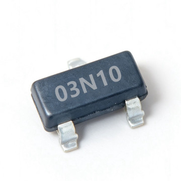

三极管与 MOS：参数背后的测试条件
规格书里最危险的不是数字，是数字后面那行小字。「Rds(on)=30mΩ」如果标的是 Vgs=10V，你在 3.3V 驱动下拿到的可能是 200mΩ——差 6 倍。「hFE=200」如果标的是典型值，你按 200 设计就会在批量生产里遇到一半的板子不饱和。读条件，比读数字重要。

读完这一章，你应该能
- 看懂 hFE 分档（O/Y/G）并坚持用同档最小值设计
- 识别 Vce(sat) 标注的 Ic/Ib 条件，判断自己的电路是否「深度饱和」
- 判断 3.3V 驱动能不能让一颗 MOS「完全开通」，以及不能时的替代方案
- 用 Rds(on)@Vgs 与 RθJA 算温升，判断 SOT-23 能不能扛
- 理解 SOA、二次击穿与栅极 ESD 三种失效
2.5.1三极管：三个数 + 两个条件
| 参数 | 常见标注条件 | 设计口径 |
|---|---|---|
| hFE | @VCE=1V、IC=100mA、25°C；常分 O(85–160)/Y(120–200)/G(200–300)/L(300–400) | 用同档最小值，且按 2–5 倍过驱动 |
| VCE(sat) | @IC/Ib=10（即强制 β=10）、25°C | 你的 Ib 小于标注值 → 实际 VCE 更高、发热更大 |
| VBE(on) | @IC=100mA，约 0.7V（大电流可到 0.9V） | 算基极电阻时用最坏值 |
| Ptot / RθJA | 25°C、标准焊盘；SOT-23 常见 0.2–0.35W、200–300°C/W | 85°C 环境按降额曲线打折 |
hFE 是「分档」而不是「一个数」：同一型号可能分 O/Y/G 三档，价格一样但增益范围不同。设计时若按典型 200 算基极电流，遇到 O 档（最小 85）就会饱和不足，VCE 抬高、发热翻倍——这是批量生产中「有的板子烫、有的不烫」的常见原因。
本板算例：Q1（SS8550，PNP）驱动蜂鸣器，R21=1K，3.3V 驱动：Ib≈(3.3−0.7)/1k=2.6mA。蜂鸣器 20–30mA，若 hFE 最小 85，可驱动 221mA——过驱动 7–11 倍，VCE(sat) 约 0.1V，管耗 3mW。这就是「用 1K 而不是 10K」的理由：10K 只给 0.26mA，×85=22mA，刚好卡在蜂鸣器电流上，批量里必然有一部分不响或声音弱。
2.5.2MOS 的三个门限：Vgs(th)、Rds(on)@Vgs、Qg
MOS 是电压驱动，但「电压够不够」要看三个层次：
- Vgs(th)：刚开始有电流的阈值，通常 0.5–2.5V，且是范围（如 0.6–1.5V）。它只说明「开始导通」，不代表完全开通。
- Rds(on)@Vgs：规格书会给 4.5V、10V 两行，少数给 2.5V。你要看的是「你的实际 Vgs 那一行」。
- Qg（栅极电荷）：决定开关速度与驱动损耗。高频时它比 Rds(on) 更重要。
| 驱动电压 | 典型 Rds(on)（SOT-23 小 NMOS） | 能否当开关用 |
|---|---|---|
| Vgs=10V | 20–50mΩ | 完全开通 |
| Vgs=4.5V | 30–80mΩ | 基本开通（逻辑电平 MOS 的设计点） |
| Vgs=3.3V | 60–200mΩ | 要看器件是否标「3.3V 驱动」；普通 MOS 会进入线性区 |
| Vgs=2.5V | 150–500mΩ | 多数器件已不适合大电流 |
关键判据：选型时先看规格书有没有「Rds(on) @Vgs=2.5V 或 3V」这一行（俗称 logic-level / sub-logic-level）。没有这一行，就说明厂家没保证 3.3V 下能开通，你不能靠「Vgs(th)=1V 所以 3.3V 够了」来推断。
为什么重要：MOS 在「半开」状态工作在线性区，Rds(on) 随 Vgs 急剧上升。3.3V 驱动一颗 10V 器件，可能拿到 200mΩ；2A 电流下 P=0.8W，SOT-23 的 RθJA≈250°C/W → 温升 200°C，几秒就冒烟。
2.5.3SOA 与热：SOT-23 到底能扛多少
规格书的「PD=0.35W」是在 25°C、无限大散热条件下的数字，实际由热阻决定：
Tj = Ta + P × RθJA ，要求 Tj ≤ 150°C
算例：SOT-23、RθJA=250°C/W、环境 60°C、允许 Tj=125°C（留 25°C 余量）：
Pmax = (125−60)/250 = 0.26W
也就是说：2A 电流下 Rds(on) 必须 ≤65mΩ 才不超温。若实际是 200mΩ，只能跑 1.1A。这个换算比背「0.35W」有用得多。
SOA（安全工作区）是另一个维度：它给的是「VDS 与 ID 同时取某组值时能持续多久」，用于判断开关瞬态、短路、浪涌时会不会二次击穿。MOS 没有二次击穿（那是 BJT 的），但寄生 BJT 开通（体二极管反向恢复时）会导致失效，所以 datasheet 会标「body diode dv/dt 限制」。
2.5.4栅极 ESD：最容易「摸坏」的地方
MOS 的栅极是一层几十纳米厚的氧化层，等效电容几 nF、绝缘电阻 1012Ω 以上。人体一摸（几百 V 静电）就可能击穿。表现不是「立即坏」，而是漏电变大、Vgs(th) 漂移，几周后彻底失效。
- 规格书 VGS 绝对最大常见 ±20V（小信号 MOS 可能只有 ±8V）；
- 焊接/调试时先短接 G-S 或戴防静电手环；
- 栅极串 10–100Ω 电阻可抑制振铃，但不能防 ESD；真正的防护靠板级 TVS/齐纳。
本板用 MOS 做「电平转换/放电」时，栅极直接接 SoC 的 3.3V IO，中间没有串阻——因为距离近、速率低。若走线长，就该加 22–100Ω 串阻，同时抑制振铃与尖峰。
2.5.5在路实测：三个读数分清 BJT 与 MOS
- 二极管档测三个方向：MOS 的 D-S 之间有体二极管，一个方向 0.5–0.7V、反向 OL；BJT 的 B-E、B-C 各是一个 PN 结，两个方向都测会看到「两个 0.6V」。
- 判断 N/P：NMOS 体二极管阳极在 S（源），所以黑表笔接 D、红接 S 时导通；PMOS 相反。
- hFE 档：万用表的 hFE 插座只对 BJT 有效，插 MOS 会读到乱数。别用它判 MOS。
在路测量时，G 脚常被前级电阻拉低，读数会偏；判据仍是「与同型号对比」+「拆下复测」。
五个坑
① 按 hFE 典型值算基极电流：批量里一半不饱和。
② 用 10V 器件的 Rds(on) 估 3.3V 驱动：实际可能高 4–6 倍，直接烧。
③ 把「PD=0.35W」当可用功率：85°C 环境下只能 0.1–0.15W。
④ 手摸 MOS 栅极：ESD 击穿氧化层，隐患几周后才暴露。
⑤ 驱动感性负载不接续流二极管：关断瞬间 VCE/VDS 尖峰打穿。